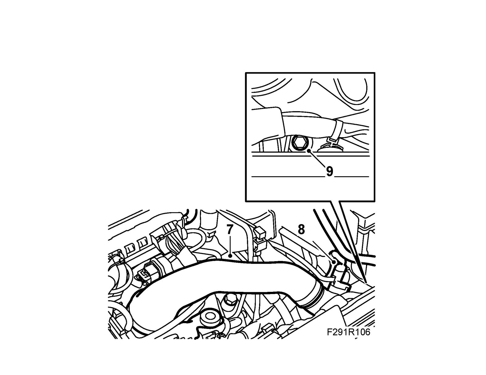
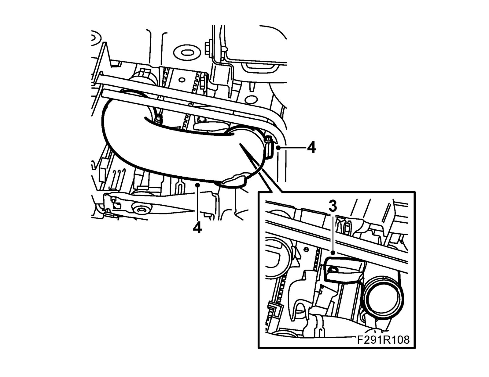

Upper Delivery Pipe, Charge Air Cooler, B207
Upper delivery pipe, charge air cooler, B207To remove
1. Raise the car.
2. Remove the Spoiler shield, front.
3. Detach the hose clip on the lower junction hose from the charge air pipe.
4. Remove the lower charge air pipe bracket from the fan cowling.
5. Lower the car.
6. Remove the upper engine cover.
7. Detach the hose clips to the upper junction hose and bend the hose aside.

8. Remove the connector and the hose from the temperature/pressure sensor on the charge air pipe.
9. Remove the charge air pipe upper bracket from the fan cowling.
10. Lift away the delivery pipe.
To fit
Important
To reduce the risk of hoses mounted on the delivery side of the turbocharger coming loose due to low friction at high air pressure, the hoses and connecting pieces must be cleaned thoroughly before fitting. Use a rag dampened with 93 160 907 Motip Dupli cleaning agent to wipe clean inside the ends of the hoses. Clean the connecting pieces as well. If hose clips are rusty or damaged, they must be replaced so the correct clamping force is maintained.
1. Position the delivery pipe. Insert the bolts for the charge air pipe upper bracket.
2. Raise the car.
3. Fit the delivery pipe lower retaining bolt.

4. Fit the junction hose on the charge air pipe and tighten the hose clip.
5. Fit the Spoiler shield, front.
6. Lower the car.
7. Fit the charge air pipe upper bracket on the fan cowling.
8. Fit the connector and the hose from the temperature/pressure sensor on the charge air pipe.
9. Fit the hose clips to the upper junction hose and tighten the hose clips.
10. Fit the engine cover.